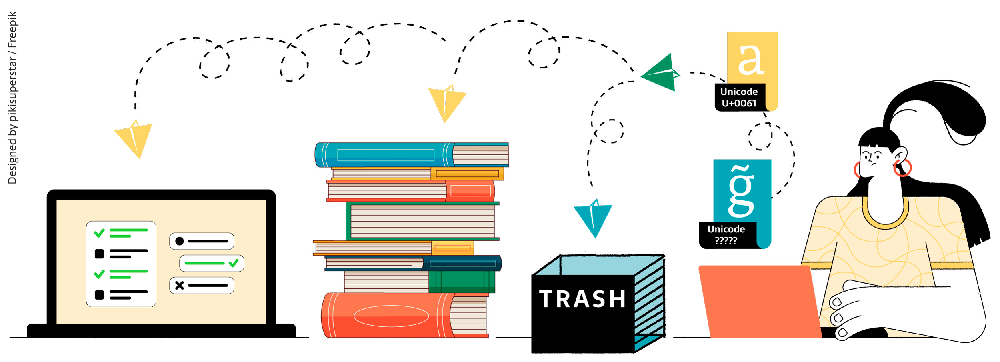
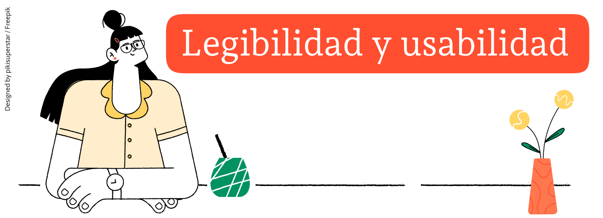

La invitación a participar en este libro me transportó al momento en el que oí por primera vez hablar sobre la dimensión social del diseño; me refiero a la ponencia de Gérard Paris Clavel en la conferencia organizada por la revista Tipográfica en 1996. El caballero se paró en el escenario y sin dar muchas vueltas dijo alto y claro: «el diseño cobra sentido realmente si persigue un objetivo social», y continuó:
…frente al poder mundial de los medios masivos de comunicación podemos proponer un medio «internacional de la proximidad». Compartir en todo el mundo las singularidades locales, nuestras propias referencias culturales, en lugar de dar paso a una «sopa mundializada» servida por las autopistas de la comunicación mercantil.[2]
Salí de esa conferencia con la certeza de que hacer algo al respecto era una cuestión impostergable. Años después empecé a estudiar Tipografía en la Universidad de Buenos Aires. En el taller del cuarto piso me enfrenté a mi primer proyecto tipográfico llamado Cambo junto a Andrés Torresi. Queríamos diseñar una fuente que abordara una problemática (social) real, una fuente con la cual se pudiera componer palabras en inglés o francés (idiomas que utilizan el sistema latino de escritura) y camboyano[3] (idioma que utiliza el sistema khmer, en adelante en español jemer). Nuestro primer objetivo fue que las letras latinas armonizaran y mantuvieran el ritmo del jemer sin disfrazarse de jemer.
La investigación para desarrollar este proyecto nos mostró la precariedad tipográfica que hay en algunas regiones del mundo. Tuvimos que aprender a mirar el jemer abandonando los prejuicios estéticos y valorativos que traíamos desde nuestro lugar occidental, sudamericano y argentino. Debíamos analizarlo, comprenderlo y apropiarnos de él, y desde esos ojos reconstruir las letras de nuestro sistema de escritura. Éramos los invitados, no debíamos invadir el párrafo con letras latinas caracterizadas con formas del jemer, nuestro objetivo era respetar la singularidad de cada sistema de escritura, lograr que cada uno mantuviera su identidad y construyeran párrafos legibles.
Cambo ht. Khmer - Latín.
Actualmente la información circula en formato digital; como contenido de un sitio web, un mail, un mensaje de texto, y también los textos de la producción gráfica analógica deben ser procesados digitalmente. Como consecuencia, si un sistema de escritura o una letra no está digitalizado y codificado de acuerdo con el estándar Unicode[4] vigente, este sistema o letra no tiene una «vida digital» y no podrá sobrevivir en el escenario de circulación actual.

La vida digital de un signo está, en cierta medida, atada al hecho de tener o no tener un código Unicode asignado.
Instancia digital de una pieza de diseño analógica, un libro.
Pertenezco al grupo privilegiado de gente cuyo idioma y sistema de escritura es popular y se ha extendido por todo el planeta. En algún momento después de 1990 empecé a usar la computadora para trabajar; por un breve tiempo debí tipear maraalt 0241a para que en la pantalla aparezca la palabra «maraña». Este contratiempo no duró mucho, en breve llegaron a las góndolas teclados con la tecla ñ posicionada en el meñique derecho.
Pero los usuarios del idioma jemer o khemer tuvieron que tener más paciencia para poder tipear sus palabras en un correo electrónico o en un mensaje de texto:
El sistema operativo Windows incorporó soporte para el sistema de escritura jemer en su versión «Vista», lanzada el 30 de enero de 2007[5].
Apple agregó jemer en Mac OS X Lion lanzado el 20 mayo de 2011.
Android incorporó soporte para jemer en su versión 4.4 «KitKat» lanzada en octubre de 2013 [6].
Después de Cambo llegó Andada ht, mi segunda tipografía. Durante un tiempo fue una tormenta de ideas que buscaban ordenarse; el enunciado del proyecto era simple: «desarrollar una tipografía que aborde la problemática de un idioma, el guaraní»[7]. La relación entre la tipografía y el idioma fue –y es– el motor de este proyecto. Sabía qué quería hacer pero no sabía cómo, necesitaba establecer una metodología de trabajo para ordenar el caos.
Mi hipótesis:
De la misma manera que las reglas ortográficas, gramaticales y ortotipográficas definen la construcción de una lengua y la relación entre sus partes, esas reglas serán las que definan el criterio de diseño para desarrollar una tipografía que atienda a las problemáticas específicas de ese idioma.
Los pasos a seguir fueron:
definir el alfabeto guaraní[8], es decir, los signos que debía diseñar;
revisar la situación de la vida digital de esos signos y cómo los usuarios acceden a ellos.
Este idioma pertenece a la familia tupí, su uso se extiende desde las Antillas hasta el Río de la Plata. La búsqueda de su alfabeto (achegety) me llevó a realizar un largo recorrido a través de la historia de las palabras impresas en esta lengua. Empecé a tirar de un hilo que se fue transformando en una madeja enmarañada que me movilizó a reflexionar desde mi posición como diseñadora de tipografía sobre la situación de los idiomas originarios en Latinoamérica y el proceso de reivindicación que atraviesa desde hace ya unos 20 años[9].
Cuando el Imperio Romano se extendió sobre Europa (im)puso la grafía latina a los idiomas que se iban cruzando en su camino. Cuando Europa se extendió sobre América (im)puso la grafía latina a los idiomas locales y los reemplazó por lenguas europeas.
Los primeros registros que los europeos hacen del guaraní los encontramos en las crónicas que Antonio Pigafetta realizó durante la expedición de Fernando de Magallanes y Juan Sebastián Elcano alrededor del mundo entre agosto de 1519 y septiembre de 1522.
Página del Preludio del libro «Arte», unos de los libros del «Tesoro de la lengua Guaraní» de Antonio Ruiz de Montoya reeditado sin alteración alguna por B.G. Teubner, 1876. Foto: Carolina Giovagnoli.
Durante el período colonial —entre los siglos XV y XVIII— y ya entrado el siglo XX llegaron a Sudamérica numerosos misioneros religiosos
[11] y naturalistas[12] quienes ensayaron diferentes modelos de transliteración del guaraní al sistema latino, organizando vocabularios y definiendo ortografías y gramáticas. Estos trabajos sentaron las bases para la escritura latina del guaraní. Su forma actual se fijó en 1950 en el Congreso de la Lengua Guaraní en Montevideo en conjunto con los demás países de la región guaraní, el achegety o «alfabeto Montevideo 1950» es el nombre con que se designa al alfabeto oficial.
Cuando creí que había definido la lista de letras a diseñar, intenté cotejar mis datos con el registro impreso y todo era ambiguo. Los signos que debían marcarse de una manera estaban marcados de otra. Por ejemplo, el achegety está compuesto por 32 grafemas, 12 de ellos son vocales, aeiouyãẽĩõũỹ (las que tienen tilde ˜ son las nasales). La nasalidad se registró ya en la primera ortografía de Montoya en 1640[13] como una particularidad distintiva del idioma, los signos diacríticos que marcaban este rasgo fueron cambiando –breve invertido, diéresis, circunflejo, acento grave y tilde–. Desde 1950 se acordó el uso de la tilde ˜, en la actualidad seguimos encontrando diéresis o circunflejo, particularmente en ẽĩũỹ.
Mi pregunta: ¿por qué solamente estas cuatro vocales?
La respuesta: por un lado la vida digital del alfabeto está dividida en cuatro bloques de codificación[14] y por otro la problemática en torno a la ausencia de teclados que contenga y haga presente estas letras en un soporte físico que le permita al usuario interactuar con su alfabeto. Según lo observado, los hablantes consideran importante distinguir entre vocales marcadas y sin marcar, no es relevante qué marca diacrítica o qué acento se utilice, pues esta variable está subordinada a la posibilidad tecnológica que tengan.
Otro signo que conocí durante este recorrido fue la «oclusiva glotal sorda»[15] cuyo nombre de pila es «puso» y aquí otra vez tuve que aprender a oír a los usuarios. En el campo de acción de las letras, en los libros, en los textos, la representación de esta letra es ambigua, algunos prefieren usar el apóstrofo[16], otros, el saltillo[17].
El signo en la primera palabra es un saltillo y en la segunda, un apóstrofo, ambos son puso.
Las normas ortográficas vigentes adoptadas en 1950 determinan:
El apóstrofo, signo del hiato glotológico, es considerado en guaraní un fonema consonante por establecer diferencia fónica y semántica en las palabras. Ej. kái, kaꞌi […]. Para su graficación se ha adoptado como letra la coma alta o signo de la glottal stop del inglés […].[18]
Para los usuarios lectores esta ambigüedad entre saltillo y apóstrofo no representa ningún conflicto en el reconocimiento del signo y legibilidad de la palabra, se lee de memoria y por contexto; el problema somos los lectores que podemos distinguir entre ambos caracteres.
Mi pregunta entonces era: habiendo un signo específico –un grafema– llamado saltillo que se utiliza para representar este sonido –fonema– ¿por qué se utiliza el apóstrofo? Sí, caí en la tentación del «chauvinismo tipográfico»[19] e intenté durante muchos años que el puso fuera representado con un saltillo.
Mi reflexión al respecto fue la siguiente: La «consonante glotal sorda» en guaraní se llama «puso», y está representada con un saltillo o un apóstrofo; la «consonante sonante, nasal y palatal» en español se llama «eñe» y el grafema que la representa es la ñ cuyo nombre técnico es «ntilde». «Puso» y «eñe» son los nombres que estas culturas le pusieron a sus signos.
Mi insistencia por imponer el uso del saltillo para representar el puso se fue moderando en el camino de búsqueda que tuve que recorrer para conciliar mi hacer con las necesidades reales de los usuarios.
Si tomamos dos idiomas, por ejemplo inglés y alemán, vemos que ambos usan el mismo sistema de escritura latino, pero cada uno de ellos presenta adaptaciones particulares reflejadas en sus teclados: QWERTY para el inglés y QWERTZ para el alemán.
Teclado alemán con ßäöü y teclado inglés.
La adaptación que hace un idioma para construir su alfabeto implica incorporar signos (letras o diacríticos) o resignificar combinaciones de signos (dígrafos, trígrafos, etc.), en la búsqueda de acercar la dimensión oral a la dimensión escrita de un idioma. Según los criterios, las herramientas, la pericia y las intenciones de los expertos en el momento en que este proceso de transliteración se desarrolle los resultados irán variando.
Eth Ðð, torn Þþ y Æ en el islandés, ezett ẞß en el alemán y puso Ꞌꞌ en el guaraní son letras que se incorporan a los alfabetos de estos idiomas –que utilizan como base el sistema latino– para poder darle grafía a sonidos específicos y distintivos que construyen su identidad lingüística y cultural. Algunas comunidades hablantes cuentan con una gran cantidad de documentación[20] donde relevan, indican y debaten sobre el diseño de sus signos identitarios, esto no ocurre con el puso.
Este camino de aprendizaje, de acercamiento y compresión tuvo lugar gracias a la posibilidad de pensar este problema desde el usuario. Junto al requisito de legibilidad que le pedimos a una tipografía, agregué el de usabilidad: «que los usuarios puedan utilizar los signos», que puedan escribir (tipear) sus palabras en el teclado.

Deberíamos cuidar no solo la legibilidad de los signos, sino también su posibilidad de ser utilizado por los usuarios de los diferentes idiomas. Los usuarios debe poder acceder a sus signos.
Investigar y definir la esencia de una letra, estudiar su origen formal y su origen histórico para poder argumentar y documentar la propuesta es el primer paso en este proceso de reconocimiento de la diversidad lingüística.
Actualmente, el ambiente propicio para que un sistema de escritura o un idioma sobrevivan, podría estar definido de la siguiente manera[21]:
un Estado que lo reconozca oficialmente,
un sistema educativo que lo incluya en su currícula escolar,
una industria que produzca interfases físicas –hardware, teclados, tableros, etc.– contemplando esta diversidad y garantizando a los usuarios la posibilidad de acceder a sus signos,
una industria tecnológica –Tecnología Informática y Comunicaciones– que desarrolle herramientas digitales –sistemas operativos, software, aplicaciones– contemplando la diversidad lingüística,
desarrolladores y diseñadores que digitalicen y codifiquen los signos.
Algunos de esos puntos tocan mi labor directamente. Paris Clavel proponía «tomar la palabra tomando la imagen»; como diseñadora de tipografía no puedo tomar la palabra si mi idioma no se puede tipear. Un idioma o sistema de escritura sin vida digital es un idioma invisibilizado y condenado a desaparecer.
En 1996 fue aprobada en Barcelona la Declaración Universal de Derechos Lingüísticos. Los diseñadores de tipografía podemos hacer un importante aporte a la promoción de los derechos de muchos hablantes de lenguas invisibilizadas, minimizadas o amenazadas, ponderando la riqueza de su diversidad lingüística y cultural y rechazando la homogeneización cultural forzada, y en este sentido mi trabajo es un «servicio público: la tipografía preserva el lenguaje y el lenguaje preserva la cultura»[22].
Como cierre me gustaría traer una historia que me atañe personalmente: a finales de 1980 y principios de 1990, la Comunidad Económica Europea pretendió impulsar el proyecto de comercializar teclados sin la tecla ñ. El gobierno español, la Real Academia Española y grupos de intelectuales se opusieron y tomaron la palabra para defender y reclamar nuestros derechos lingüísticos[23]. María Elena Walsh lo presenta de esta manera:
La culpa es de los gnomos que nunca quisieron ser ñomos. Culpa tienen la nieve, la niebla, los nietos, los atenienses, el unicornio. Todos evasores de la eñe. […] ¿Quieren decirme qué haremos con nuestros sueños? ¿Entre la fauna en peligro de extinción figuran los ñandúes y los ñacurutuces? ¿En los pagos de Añatuya cómo cantarán Añoranzas[…] ¿Y cómo graficaremos la más dulce consonante de la lengua guaraní? «La ortografía también es gente», escribió Fernando Pessoa. Y, como la gente, sufre variadas discriminaciones […]. La supervivencia de esta letra nos atañe, sin distinción de sexos, credos ni programas de software. Luchemos para no añadir más leña a la hoguera donde se debate nuestro discriminado signo. Letra es sinónimo de carácter. ¡Avisémoslo al mundo entero por Internet! La eñe también es gente.[24]
No hay mucha vuelta, tomar el idioma como criterio de diseño es el aporte que puedo hacer desde mi oficio gráfico para la visibilización de idiomas que quieren tomar la palabra y no pueden. Considerar la diversidad lingüística embellece el panorama frente a la posibilidad monolingüe y me da nuevas herramientas para poder diseñar en un mundo inclusivo, plural y políglota.
Notas, referencias, bibliografia, etc.
[1]
Paris Clavel, G. (1997, septiembre). El diseño cobra sentido realmente si persigue un objetivo social. Con su capacidad de expresión simbólica puede fomentar el conocimiento y cuestionamiento de los problemas que aquejan a nuestra sociedad. Tipográfica, Año XI, No. 33. ↑ Volver
La lengua oficial en Camboya es camboyano o jemer (khemer) y utiliza el sistema de escritura jemer. El idioma jemer convive con el francés y el inglés que utilizan el sistema latino. Al diseñar una pieza gráfica multi-script (con múltiples sistemas de escritura) es necesario lograr armonizar los signos de los diferentes registros. Algunas tipografías expanden sus sets de caracteres a latín, cirílico, griego, devanagari, pero hay sistemas de escritura cuya digitalización está más relegada. En 2009 el camboyano era uno de ellos.
↑ Volver
[4]
Unicode es un estándar de codificación de caracteres diseñado para facilitar el tratamiento informático, transmisión y visualización de signos. Unicode define cada carácter o símbolo mediante un nombre e identificador numérico, el code point («punto de código»). Este estándar es mantenido por el Unicode Technical Committee (UTC), integrado en el Consorcio Unicode, del que forman parte con distinto grado de implicación empresas como: Microsoft, Apple, Adobe, IBM, Oracle, SAP, Google, Facebook o Shopify, instituciones como la Universidad de Berkeley, o el Gobierno de la India y profesionales y académicos a título individual. Los caracteres esenciales –grafemas– son codificados de forma abstracta y la representación visual (tamaño, dimensión, fuente o estilo) queda a merced de cómo el software lo trate.
↑ Volver
[5]
Script and Font Support in Windows (agosto 2017). Disponible aquí.
↑ Volver
[6]
Muon, Chamnan (2013, julio). Khmer Language Officially Be in Android 4.4, KitKat. Chamnam Muon Blog. Disponible en aquí.
↑ Volver
[7]
El guaraní (avañeꞌẽ) es una lengua de la familia tupí-guaraní hablada por aproximadamente 12 millones de personas en América del Sur. En Paraguay es, junto al español, el idioma oficial desde la constitución de 1992. En Argentina se habla guaraní en las provincias de Chaco, Misiones y Formosa y en la provincia de Corrientes es lengua oficial. Desde 2009 es una de las lenguas indígenas oficiales de Bolivia.
↑ Volver
[8]
Zarratea, Tadeo (2013). Gramática elemental del guaraní paraguayo. Asunción: Ed. Servilibro. Aquí el autor plantea que cada idioma posee y construye su alfabeto, a pesar de que dos idiomas (guaraní y español) compartan el sistema de escritura latina, «cada lengua deberá adaptar (los signos gráficos) a su corpus fonético asignando a cada letra la representación de algún fonema de ese idioma».
↑ Volver
[9]
En Argentina la Ley de Educación Nacional N° 26.206 fue aprobada por el Congreso de la Nación el 14 de diciembre de 2006. En el artículo 17 incorpora la modalidad «Educación Intercultural Bilingüe» (EIB) garantizando el derecho constitucional de los pueblos originarios a recibir educación que contribuya a preservar y fortalecer sus pautas culturales, lengua, cosmovisión e identidad en los tres niveles de educación, inicial, primaria y secundaria.
↑ Volver
[10]
Antonio Pigafetta, veneciano, se embarcó como cronista en la expedición que circunnavegando el mundo en 1519. El libro se publicó originalmente en italiano en 1536 con el título Relazioni in torno al primo viaggio di circumnavigazione. Notizia del Mondo Novo con le figure dei paesi scoperti. Este ya no existe pero hay reediciones y traducción hechas a posteriori. Los datos fueron tomados de la versión española de 1922. Disponible aquí.
↑ Volver
[11]
Antonio Ruiz de Montoya (Arte y vocabulario de la lengua guaraní [1640]; Gramática y diccionario guaraní-tupí; Tesoros de la lengua guaraní [1639]); Blas Pretorio (Compendio de los vocabularios más usados en la lengua española y guaraní [1729]); Juan G. Granado (Pequeño ensayo de la gramática del idioma guaraní… [1891]); Alonso de Aragona (Breve introducción para aprender la lengua guaraní [1620-1629]), por nombrar algunos autores y obras.
↑ Volver
[12]
Moisés Bertoni es uno de los más destacados, nació en Suiza en 1857, llegó a América en 1884 y se instaló en Paraguay en 1887 hasta su muerte en 1929. Publicó varios libros donde podemos leer sus propuestas ortográficas para el guaraní en beneficio de la ciencia: Ortografía Guaraní (1914); Influencia de la lengua Guaraní en Sud-América y Antillas (1916); La lengua Guaraní como documento histórico: Aperçu ethnographique préliminaire du Paraguay oriental & haut Parana (1920); Diccionario botánico latino-guaraní y guaraní-latino: Con un glosario de vocablos y elementos de la nomenclatura botánica (1940a); La lengua guaraní. Escritura, fundamentos gramaticales y clasificación. Apuntes póstumos. Separata de la Revista de la Sociedad Científica del Paraguay (1940b).
↑ Volver
[13]
Antonio Ruiz de Montoya. (1640). Arte, y bocabulario de la lengua guaraní. Compuesto por el padre Antonio Ruiz, de la Compañia de Iesus. .. (Vol. 1-1). El folio 1 comienza «Quatro pronunciaciones tiene esta lengua muy necesarias para hablar propiamente, cuya nota se pone aquí, y servirá para entender el vocabulario y tesoro de esta lengua. La primera pronunciación es narigal y se forma en la nariz, cuya nota es ̑ puesta sobre la vocal…».
↑ Volver
[14]
Los cuatro bloques de codificación son:
ãõ: Latin-1 Supplement;
ẽỹ: Latin Extended Additional;
ĩũ: Latin Extended-A y
ꞌsaltillo: Latin Extended-D.
Ramírez Aldariz, A. (2015, febrero 23). Unicode. Adictos al trabajo. Disponible aquí; Unicode block. (2020).
En Wikipedia. Disponible aquí;
Unicode Zeichentabelle. (s. f.). Disponible aquí [fecha de consulta: 23 de septiembre de 2020].
[15]
También conocida como hiato glótico o glottal stop.
↑ Volver
[16]
«Apóstrofo […] es usado por los lingüistas para marcar las consonantes glotalizadas […]». Gálvez Pizarro, Francisco (2018). Hacer y componer. Chile: Ediciones Universidad Católica de Chile. «El apóstrofo se utiliza en muchos idiomas y con diferentes propósitos: […] para señalar un saltillo u oclusión glótica o una letras aspirada (maya, náhuatl, hawaiano, guaraní, chamorro, samoano…) […]». Buen Unna de, Jorge (2017). Diccionario de caracteres tipográficos (1a). Gijón: Ediciones Trea. «Usado como un carácter en sí mismo, el apóstrofo sirve muchas veces para señalar el cierre glotal o saltillo». Bringhurst, R. (2008). Los elementos del estilo tipográfico. (Versión 3.1) (M. Averbach, trad.; 1a edición en español). México: Fondo de Cultura Económica.
↑ Volver
[17]
«La consonante oclusiva glotal sorda [ʔ] es la que se escribe frecuentemente con el saltillo [ꞌ], pero no siempre». Perez López, María Soledad (2012). Los fenómenos glotales y el saltillo en la ortografía de las lenguas originarias. Cuicuilco, vol. 19, No. 54, pp. 81-100.
↑ Volver
Buen Unna de, Jorge (2009, primer y segundo semestre). “El fin de la utopía monofonemática”. Boletín del IIB, vol. XIV Nros. 1 y 2. Leer artículo aquí.
↑ Volver
Bil’ak, P. (2013, julio). Type as public service. Financial Times Magazine. Disponible aquí. ↑ Volver
[23]
Monteira, F. (1991, mayo 10). Cronología del conflicto. El País. Disponible aquí.
Monteira, F. (1991, mayo 10). La solución del Gobierno a la eñe puede chocar de nuevo con las normas de la CE. El País. Disponible aquí.
País, E. (1991, mayo 10). Informe de la Real Academia Española sobre la consulta relativa a la eñe. El País. Disponible aquí. ↑ Volver
[24]
Walsh, M. E. (1996, marzo 24). La eñe también es gente. La Nación.
↑ Volver
[Imágenes]
Vida digital de un signo.
Saltillo - Apóstrofo.
Legibilidad Usabilidad.
Designed by pikisuperstar / Freepik.
↑ Volver